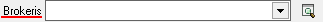
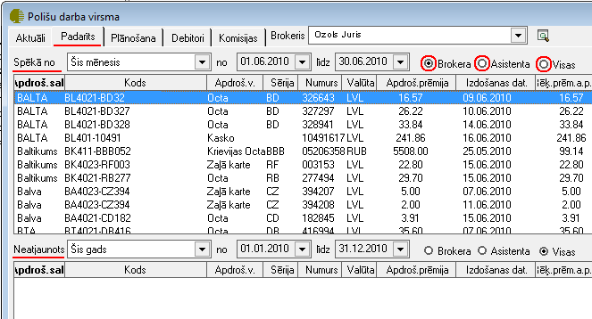
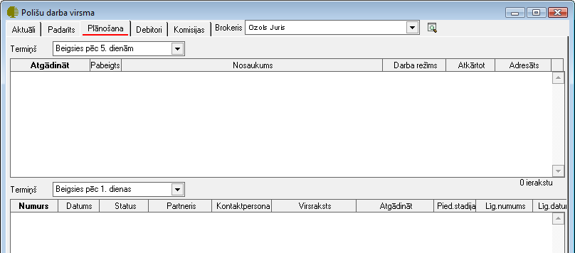

Polišu darba virsma¶
Polišu darba virsma (ātrais taustiņš F9) ir paredzēta brokerim aktuālās informācijas iegūšanai - aktuālie līgumi un izrakstītie rēķini, padarītie darbi, rēķini, kuriem tuvojas maksājuma termiņš, plānošana un piedāvājumi, debitori, un nopelnītās kā brokera, asistenta un piesaistītāja komisijas.
Polišu darba virsmā ir iespējams apskatīt piecas lapaspuses (Aktuāli, Padarīts, Plānošana, Debitori un Komisijas)
Laukā
{kind=link}
, iespējams izvēlēties attiecīgo brokeri par kuru dati tiks atlasīti.
Aktuāli¶
Lapaspusē Aktuāli ir iespējams iegūt datus par aktuālajām polisēm, kurām tuvojas beigu termiņš. Izvēles laukā Termiņš, uzstādot attiecīgo termiņa periodu, tiks atlasīti dati pēc norādītajiem kritērijiem:

Padarīts¶
Lapaspusē Padarīts ir iespējams apskatīt datus par padarītajiem darbiem - informācija par parakstītajām polisēm un nenoslēgtiem polišu līgumiem.Tāpat ir iespējams norādīts kādi ir parakstītie līgumi kā Brokeri, kā Asistentam vai kā Visi (gan kā brokeris,asistents un piesaistītājs). Norādot attiecīgo Parakstīšanas un Neatjaunošanas periodu, iespēja atlasīt visas izvēlētā perioda datus.
{kind=link}
Plānošana¶
Lapaspuse Plānošana ir paredzēta, lai būtu iespējams iegūt informāciju par plānotajiem darbiem attiecīgā periodā.
Izvēles laukā Termiņš, uzstādot attiecīgo termiņa periodu, tiks atlasīti dati pēc norādītajiem kritērijiem:
informācija par visām aktivitātēm, notikumiem, korespondenci un darba uzdevumiem un informācija par veidotajiem piedāvājumiem.
{kind=link}
{kind=link}
{kind=link}